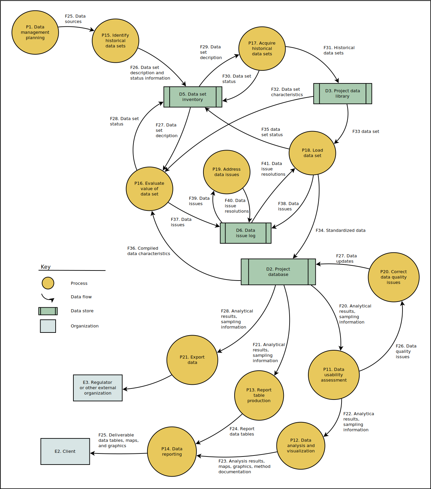
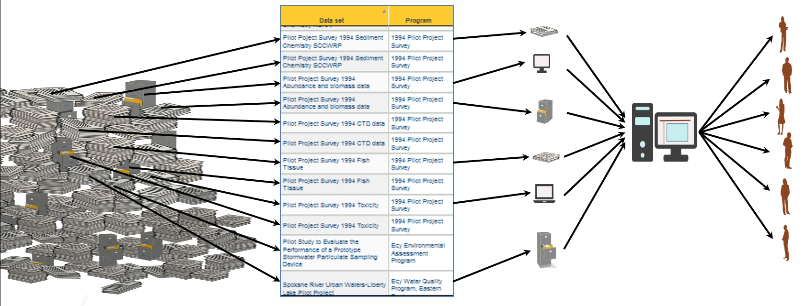

Data Management Workflow for Historical Data
This page describes data management processes and data flows for projects (or project tasks) that include the compilation of data obtained or received from other sources. The other sources may include literature, clients, other consultants, and websites. Data from such sources is referred to here as historical data, to distinguish it from data that are collected by Integral. An alternative workflow for data collected by Integra is described on the companion wiki page Data Management Workflow for Sampling Data.
Data management processes and data flows are shown in the following data flow diagram (DFD). Each of the processes and data flows are described in following sections. This DFD uses Yourdon/DeMarco symbology, as described by Wikipedia. Note that the arrows in the DFD do not represent sequence or control flow, as in a flowchart. A DFD is more useful than a flowchart for a data-based workflow. The contrast between flowcharts and DFDs is briefly discussed on the page Data Management Workflows for Sampling Data.

Processes
P1. Data Management Planning
This process should ordinarily be conducted as part of project planning. It should be carried out jointly by the project manager and the project data manager. This process may include:
- Identification of data needed for analysis and reporting based on project goals (the DQO process).
- Identification of data needed for export, if data are to be transmitted to other organizations.
- Completion of a project initiation checklist.
- Development of a scope description for data management activities.
- Identification of the data model needed
- Identification of sources of historical data.
- Determination of the coordinate reference system and basemap data to be used.
- Budgeting for data management activities.
- Development of a Data Management Plan.
- Initiation of a project database and GIS project.
Other activities may be conducted and products produced if the project will require other types of data, such as newly-collected sampling data.
P11. Data Usability Assessment
Prior to conducting statistical, geospatial, or other analyses, the usability of the selected data should be assessed. This process should be carried out by the data analyst and project data manager, depending on the type of assessment to be performed and the best tool or technology for the job. The data usability assessment may make use of descriptive and status information in the data set inventory, and metrics for the different dimensions of data quality. This process ordinarily starts with the production of appropriate data summaries by the project data manager.
P12. Data Analysis and Visualization
This process should be carried out primarily by the data analyst, but the first step in analyses will frequently be the selection, extaction, and summarization of data from the database, and that step may be carried out by the project data manager. The Data Accessibility page describes a variety of different ways in which data can be accessed and summarized by either data managers or other project staff. A number of standard data summaries are available that meet many common data needs. These standard summaries may be used as is, or customized. More specialized data summaries may need to be created to support some analyses. Often data summarization could be carried out using either SQL or analysis software (e.g., R, Python, Julia), and the most appropriate approach should be identified through discussions between data analysts and data managers.
Summaries of chemistry data should use the default rules for summarization of chemistry data or explicitly specify alternate data handling rules. Additional information on data summarization (primarily for data managers) is presented on the pages Producing Custom Data Summaries and Guidance and Tips for Data Managers. Custom scripts have also been developed to prepare data for some types of specialized analyses (e.g., unmixing, HCPCA, and t-SNE). Otherwise, custom data summarization scripts may need to be developed for particular analyses (if so, a budget for this effort should have been developed during the planning process).
Data analyses should follow relevant recommendations on Data Analysis Standards and Guidance and Best Practices for Data Analysis, and avoid the Worst Practices for Data Analysis. An initial stage of data exploration may be facilitated by using some of the available GUI Tools for Data Exploration.
Although data analysis and visualization is described here as a single process, frequently it is a multi-step process that could could be described by its own flowchart, data flow diagram, work breakdown structure, or other type of process map. Describing and documenting the planned data analysis process during project planning, and accounting for variances, can help to ensure that this work is carried out in a way that clearly supports project goals and is performed in an orderly and efficient fashion.
P13. Data Table Production
This process is carried out by the project data manager. Data to be reported as a project deliverable are extracted from the project database and restructured and formatted as appropriate. This process is ordinarily scripted. The wiki page Producing Data Summaries describes the major steps in this process. The section “Producing Data Tables for Reports or for Data Analyses” on the wiki page Guidance and Tips for Data Managers contains guidelines for the production of report data tables.
P14. Data Reporting
This process is carried out cooperatively by multiple project staff. Reports may include data tables, graphics, and maps prepared by DMA staff and others. This process ordinarily requires that more effort be applied to consistency of data representation and adherence to publication standards than do the data analysis and visualization activities.
P15. Identify Historical Data Sets
This process may be carried out by any project staff. It may require literature searches, online searches, and contacts with clients, agencies, and other consultants. The results of this process are ordinarily compiled into a data set inventory that includes a unique identifier for each data set, a general description of the data set, additional information on characteristics of particular interest to the projects, informatoin on data set availability, and indicators of the assessed value of the data set and whether or not it has been acquired and compiled with other data sets. The data set inventory may be maintained in a spreadsheet or a database.

P16. Evaluate Value of Data Set
This process may be carried out by any project staff. The value of a data set may be evaluted at several different times during a project:
- When a data set is first identified, based on its description and availability. After a data set is obtained, based on its actual content and format.
- During the data loading process, based on the type and number of data quality issues that are found.
- After a data set has been loaded, based on the support it provides for project goals. There may be overlap or interactions between this assessment and the data usability assessments that are conducted prior to individual data analyses.
The data set evaluation checklist, or a customized version of the checklist, may be useful for carrying out this process. Systematic analysis of data quality issues in a data set may require the expertise of a data manager. The data set inventory should be updated, as appropriate, with the results of this evaluation.
Data quality issues that are identified during this assessment ordinarily should be tracked in a data issue log.
P17. Acquire Historical Data Sets
This process may be carried out by any project staff. Each data set should be filed in the project data store–typically the “Data” subdirectory under the project directory for tabular data. The data set inventory should be updated when a data set is acquired.
P18. Load Data Set
This process is carried out by the project data manager. The data set is loaded into the project database, and data quality checks, and any necessary cleaning and transformations of the data, are carried out as part of this process. This includes resolution of any data issues that have been identified. The standard procedure is to carry out this process using a SQL script. If data set is in a format that has been previously used, then an existing loading script may be used or customized; if not, a new script will have to be developed (and if so, a budget for this effort should have been established during the planning process).
P19. Address Data Issues
This process may be carried out by various project staff, as appropriate to their knowledge and skills. Data issues that have been identified during initial data set review or during the data loading proocess (which may be interrupted when issues are found) may be addressed in a number of different ways. This process may require collection of additional information, application of assumptions and default values, or even a decision to omit some data. One or more resolutions may be proposed, and then reviewed and evaluated, before a final resolution is accepted. Some data issues may be unresolvable. Data issue resolutions should be documented in the data issue log and then used during the data loading process.
P20. Correct Data Quality Issues
Initiation of data analyses, and the associated data usability assessment (P11) may reveal data quality issues that were not identified during initial data compilation and loading. These issues are typically identified by a data analyst, and resolution of an issue may involve data managers, data analysts, field staff, and the project manager. These issues may be recorded in the data issue log (this interaction is not shown in the DFD above).
P21. Export Data
This process may not be required for all projects. When data must be exported to a regulator or some other organization, the data ordinarily must be retrieved from the project database and prepared in a specified data exchange format or EDD. The EDD format that is used for data exchange between organizations is typically different from the EDD format in which laboratory results are delivered. The data exchange EDD format may be specified by the external organization or may be determined by a negotiation between Integral and that organization. Some external organizations may require data that Integral would not typically record (e.g., during field work), and so export data requirements must be considered during project and data management planning. This task is ordinarily carried out by data managers, but may require some support from other project staff.
Exporting data should be carried out following the process described on the wiki page Producing Data Summaries. Requests for data that are to be exported for others may be recorded in a request tracker.
Data Flows
See the page Workflows for Sampling Data for descriptions of data flows not listed below. The sections below describe only the data flows that are specific to historical data.
F25. Data Sources
This data flow consists of the identities of all documents, websites, organizations, and individuals who are actual or potential sources of historical data sets or other information (e.g., metadata or additional data sources) about historical data sets.
F26. Data Set Description and Status Information
This data flow consists of a unique identifier for each historical data set, a description of the data that it contains (e.g., spatial extent, dates, materials, chemicals), information about its location and availability, and whether it has been acquired, reviewed for usability, and incorporated into the project database.
F27. Data Set Description
This data flow consists of information sufficient to evaluate the usability of each historical data set, including information such as its spatial extent, temporal extent, materials sampled and analyzed, and chemicals analyzed.
F28. Data Set Status
This data flow consists of information on whether a historical data set is usable and should be acquired (if it has not been already) and incorporated into the project database. It may also indicate relative value or priority of a data set.
F29. Data Set Description
This data flow consist of information about a historical data set sufficient to obtain that data set from the data source.
F30. Data Set Status
This data flow consists of information about the results of efforts to obtain a historical data set. This may indicate that the data set is not available, will be received at a future date, or has been obtained and is filed in a specific location (e.g., in the project data library).
F31. Historical Data Sets
This data flow consists of all historical data sets that are obtained, including any associated metadata documents, transmittal documentation, and the identifier for that data set that is used in the data set inventory.
F32. Data Set Characteristics
This data flow consists of information produced from a review of a data set, such as detailed information on locations sampled and measurements made, as needed to evaluate the data set’s usability.
F33. Data Set
This data flow consists of all data and metadata for a historical data set that will be loaded to the project database or that is needed to support data loading.
F34. Standardized Data
This data flow consists of historical data that have been transformed into the structure of the project database and that conforms to other requirements such as a consistent set of valid values. This data flow is electronic and occurs between the data loading script and the database server.
F35. Data Set Status
This data flow consists of information that characterizes the completion of data loading. This may consist of information such as ‘loading complete’, ‘loading paused pending resolution of data issues’, and ‘partially loaded’.
F36. Compiled Data Characteristics
This data flow consists of characteristics of any data sets in the project database that may be useful to assess the value of these or any other historical data sets.
F37. Data Issues
This data flow consists of a description, priority, and supporting data for any data issue that is identified during evaluation o fthe usability of the data set. This information may include a proposed or accepted resolution of the issue.
F38. Data Issues
This data flow consists of a description, priority, and supporting data for any data issue that is identified during an attempt to load a data set. This infomation may include a proposed or accepted resolution of the issue.
F39. Data Issues
This data flow consists of all information in the issue log pertaining to unresolved data issues.
F40. Data Issue Resolutions
This data flow consists of proposed or accepted resolutions for data issues.
F41. Data Issue Resolutions
This data flow consis of accepted resolutions for data issues.